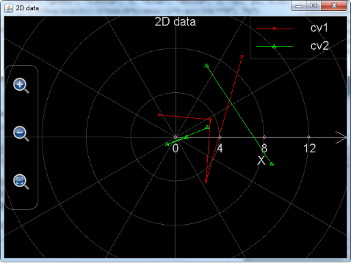

MFP Graphing Functions
Like other functions, MFP graphing functions can be called both in Scientific Calculator for JAVA and the Command Line module in Scientific Calculator Plus for Android. And the plotted graphs will be exactly the same except that on a PC platform the graph would be wider. In order to save time, in this manual all sample graphs are plotted by Scientific Calculator Plus for JAVA. However, user will get same graphs if copy the codes and run them in Scientific Calculator Plus for Android.
This manual provides many graphing samples with only one MFP statement, i.e. calling an MFP graphing function. As such, only the statement of MFP graphing call instead of the whole function definition is included in the manual. And all these statements are part of none parameter function plotGraphs in the sample code. The sample code is located in a zipped package. User can download it and copy the graph libs folder into scripts directory in Scientific Calculator Plus installation folder. The source code is the examples.mfps file in the graph libs folder. Simply run mfpexample::plotGraphs() to see all the charts.
Section 1 Plotting Graphs for Expressions
Plotting graph for expressions is quick and easy because user needs not to worry about the graph type (2D, 3D or polar), plotting range (which can be adjusted after graph is generated), colour, point and line style, and even the title and legends. All of these will be automatically determined by software.
The function to plot graph for expressions is plot_exprs whose usage is as below:
Function plot_exprs analyses at least one expression at most 8 expressions and draws 2D, polar or 3D curves based on the number of variables in the expression. The expression should be an equation, e.g. "4*x+9 == y +z**2" and "log(x*y) == x", or an assignment with an unknown variable on the left side, e.g. "k= 3+ 7 * sin(z)", or an expression which can be recognized as an assignment, e.g. "9*log(y)" can be looked on as "x = 9 * log(y)". Note that the total number of unknown variables in the expressions should be no more than 3 and each expression should include at most one unknown variable less than the total number of unknown variables. The initial range of each unknown variable is configurable, by default it is from -5 to 5 but user can adjust the range after the chart is plotted. If there are two unknown variables and one of the unknown variables is Greek letter α, β, γ or θ, instead of plotting a 2D chart, a polar graph is drawn. One example of this function is plot_exprs("4*x+sin(y)", "4-y**2==(x**2 + z**2)", "x*lg(x)/log2(z)==y"). Also note that when plotting a 2D expression which is actually an implicit function, this function can plot at most 4 root expressions; when plotting a 3D implicit function, it could be very slow because this function may solve all of the three variables and plot at most 2 root expressions for each of the variables. Because plot_exprs function is able to plot at most 8 curves, while a 3D implicit function may use up to 6 of them, user may see a too many curves to plot error if more than one implicit functions are included in the parameter list.
For example, user may want to draw the following two curves in one chart:
f(x) = ln x + 2 x - 6
and
g(x) = x3 + 0.9 x
. Note that the two expressions are not implicit functions so that there is no need to input f(x) or g(x), only the right parts of the two expressions are required. However, MFP strictly requires ( and ) for a function call, as such has to be written as ln(x) + 2*x – 6, and has to be x**3 + 0.9*x because power operator is not ^ but ** in MFP. Finally, keep in mind that plot_exprs function only accepts string based parameters. And the whole function call statement should be:
plot_exprs("ln(x)+2*x-6", "x**3+0.9*x")
. Alternatively, user may call the function in the following way:
plot_exprs("y==ln(x)+2*x-6", "x**3+0.9*x==y")
, or
plot_exprs("y=ln(x)+2*x-6", "y=x**3+0.9*x")
. Both the second and the third calling approaches set a y variable which means the value of the expressions, i.e. f(x) and g(x). Using a unique y variable for f(x) and g(x) instead of two different variables (e.g. yf and yg) because user wants to draw curves for the two expressions in one 2D chart. If two variables are declared for f(x) and g(x) respectively, a 3D chart instead of a 2D chart will be drawn.
User may also notice that, in the second calling approach where equation (==) is used, y can be placed on both left side and right side of equation. Comparatively, if assignment is used, y can only appear on the left side of assignment. This limit matches the rule of mathematics where value can be assigned to a variable but not to an expression.
Figure 1: Plot_exprs function draws a 2D chart for expressions.
The plotted chart is shown above. User can drag the curves to shift, and click the buttons to zoom-in and zoom-out. All of these actions lead to change of plotting range and recalculation of some values. If the curves are sophisticated or include many points, response to user’s operations in an Android device could be sluggish, depending on the hardware performance. But in a PC this will not be an issue.
Some users may complain that the green curve is not very smooth. This is simply because the number of steps when drawing the curve is too small. User can click the gear button and adjust the settings. In the following chart, left part of the red rectangle is the number of steps. More steps result in smoother curve and longer calculation time. By default, the number of steps is 20. Right part of the red rectangle is for singular points. Clearly, detecting singular points is time-expensive. By default, plot_exprs function does not detect singular points. However, when user uses Smart Calculator to plot curves for expressions, the default number of steps is 100 and singular points are detected. This ensures fine and accurate charts. This is also the reason that some Android users complain the slow calculation when using Smart Calculator to plot charts.

Figure 2: Settings of a 2D chart.
For another example, assume user wants to draw a chart for the following expressions:
r2 = α2 + 9
r = cos α
α = sin r
, plot_exprs can be called in the following ways:
plot_exprs("r**2==α**2+9","r==cos(α)","α==sin(r)")
or
plot_exprs("r**2==α**2+9","cos(α)"," sin(r)")
. Here the left parts of r==cos(α) and α==sin(r) (i.e. variable and ==) can be neglected. MFP is able to analyze the three expressions and automatically complete an expression based on the total number of variables in the expressions. Comparatively any part of r**2==α**2+9 cannot be neglected because it is an implicit function.
Figure 3: Plot_exprs function draws a polar chart for expressions.
The plotted graph is shown above. Because the total number of variables is two and one variable’s name is Greek letter α, a polar chart is drawn. Note that the following chart has been zoomed in and the number of steps has been increased to 200. Otherwise the chart will be quite ugly.
Please also note that, when adjusting settings of a polar chart, range of radius (r) is adjustable, but angle (α)’s range is always from -2*pi to 2*pi because zooming a polar chart does not change the range of angle.

Figure 4: Plot_exprs function draws a 3D chart for expressions.
Assume user wants to draw a 3D chart including an ellipsoid:
x2 + 2 y2 + z2 = 20
, and a surface cutting the ellipsoid:
, the statement could be:
plot_exprs("x**2+2*y**2+z**2==20","z=ln(3*x**2+y**2+2*y+2)*sin(x*y/10)")
, or ignore the variable part in the explicit function:
plot_exprs("x**2+2*y**2+z**2==20","ln(3*x**2+y**2+2*y+2)*sin(x*y/10)")
. Similar to a 2D graph, user can zoom in and out the chart. However, dragging the chart will not shift but rotate it. Therefore, if user wants to set plotting range, the only approach is clicking the gear button to launch the configuration dialog. The configuration dialog is shown as below:

Figure 5: Settings of a 3D chart.
In the dialog, the red rectangle encloses the settings of plotting range along each axis; the green rectangle is the number of steps, i.e. number of points to draw, along each axis; the blue rectangle includes the switches to show/hide axes and title. Note that before revision 1.6.7 user is only able to show or hide axes and title together. From revision 1.6.7 axes and title can be shown or hidden independently. By default, title is shown but axes are hidden.
Also note that, plotted surface can only have one colour for implicit function. Otherwise, the colour of the plotted surface gradually changes from the smallest z value to the biggest z value. Nevertheless, user is not able to choose the colour in any case.
In the end of this section another 3D chart is provided to user:
plot_exprs("x**2-z**2==20","x**2-y**2==6")
. And the plotted chart would be (both axes and title have been hidden):
Figure 6: A 3D graph is plotted based on the number of variables.
. Note that if plot x**2-z**2==20 or x**2-y**2==6 separately, user will see a 2D curve. However, if plot the two expressions together in the same graph, the total number of variables is 3 (x, y and z) not 2 so that a 3D graph is generated.
Also note that function plot_exprs is written by MFP programming language. Parameters of plot_exprs are simply transferred to the underlying functions. Because of this reason, plot_exprs is not able to evaluate variables declared before calling string based parameters. This is different from the expression calculation and calculus functions. For example, assume user has declared a variable a and its value is 3. If user runs plot_exprs("x+a"), MFP will not look on "x+a" as "x+3". Instead, a will be treated as an unknown variable similar to x. Therefore, a 3D surface instead of a 2D line will be drawn. If user does hope to use variable’s value in the string based parameter, s\he has to call function plot_exprs in the following way:
plot_exprs("x+"+a)
, and a’s value is automatically appended to the string "x+" so that what is actually plotted is expression "x+3". Similarly, inside function plot_exprs only MFP default citingspaces are visible. Addtional visible citingspaces when plot_exprs is called cannot be transferred into the body of plot_exprs. This may lead to undefined function error if a function parameter of plot_exprs does not include absolute citingspace path. Assume, for example, user declares a citingspace named ::aaaaa. Inside it user implements a function named aaaaaF(). Then user adds using citingspace ::aaaaa before calling plot_exprs. This using statement cannot simplify the calling plot_exprs statement as aaaaaF()’s absolute citingspace path is still required. So,
Plot_exprs("::aaaaa::aaaaaF(x)")
will work while plot_exprs("aaaaaF(x)") will fail as ::aaaaa is not in the searching list of function plot_exprs.
Like function plot_exprs, many other graphing functions in MFP are implemented by MFP itself and call lower level JAVA implemented functions. As such the above approach (i.e. using "x+"+a instead of "x+3" and using absolute citingspace path) is strongly recommended.
Section 2 Plotting 2D Graphs in Normal Coordinates
MFP provides the following functions to draw 2D graphs in normal coordinates:
Function Name | Function Info |
plot2dex | plot2dex(6...) : Function plot2DEX calls plot_multi_xy function to plot at most eight 2D-curves in one chart. It has the following parameters: 1. chart name (i.e. chart file name); 2. chart title; 3. X axis title; 4. Y axis title; 5. chart's background colour; 6. show grid or not; 7. curve title; 8. curve point colour; 9. curve point shape; 10. curve point size; 11. curve line colour; 12. curve line pattern; 13. curve line size; 14. t values start from; 15. t values end at; 16. t values' interval; 17. X's expression (with respect to variable t); 18. Y's expression (with respect to variable t)... Note that every new curve needs additional 12 parameters (i.e. parameters 7 to 18). At most 8 curves can be included. Also note that at this moment chart's background colour, curve point size, curve line colour and curve line pattern are not realized yet. And curve line size only has two values, i.e. zero means no connection line and non-zero means with connection line. An example of this function is plot2DEX("chart 3", "3rd chart", "x", "y", "black", true, "cv1", "blue", "x", 2, "blue", "solid", 1, -5, 5, 0.1, "t", "t**2/2.5 - 4*t + 6", "cv2", "red", "square", 4, "square", "solid", 1, -10, 10, 0.1, "5*sin(t)", "10*cos(t)") . |
plot_2d_curves | plot_2d_curves(6...) : Function plot_2d_curves plots at most 1024 2D-curves in one chart. It has the following parameters: 1. chart name (i.e. chart file name); 2. chart title; 3. X axis title; 4. Y axis title; 5. chart's background colour; 6. show grid or not (string "true" or string "false"); 7. curve title; 8. curve point colour; 9. curve point shape; 10. curve point size; 11. curve line colour; 12. curve line pattern; 13. curve line size; 14. internal variable's name (generally it is "t"); 15. internal variable's value starts from; 16. internal variable's value ends at; 17. internal variable's value changing interval; 18. X's expression (with respect to the internal variable); 19. Y's expression (with respect to the internal variable)... Note that every new curve needs additional 13 parameters (i.e. parameters 7 to 19). At most 1024 curves can be included. Also note that at this moment chart's background colour, curve point size, curve line colour and curve line pattern are not realized yet. And curve line size only has two values, i.e. zero means no connection line and non-zero means with connection line. An example of this function is plot_2d_curves("chart 3", "3rd chart", "x", "y", "black", "true", "cv1", "blue", "x", 2, "blue", "solid", 1, "t", -5, 5, 0.1, "t", "t**2/2.5 - 4*t + 6", "cv2", "red", "square", 4, "square", "solid", 1, "t", -10, 10, 0.1, "5*sin(t)", "10*cos(t)") . |
plot_2d_data | plot_2d_data(16) : Function plot_2d_data analyses at least one at most eight groups of data lists and each data group will be plotted as one curve. The number of parameters in these function can be 1 (one curve), 2 (one curve), 4 (two curves), 6 (three curves), 8 (four curves), 10 (five curves), 12 (six curves), 14 (seven curves) and 16 (eight curves). Each parameter is a data list (i.e. 1-D data array). If only one parameter, each element value in the parameter will be the y value of a point in the curve, x value of the point starts from 1 and added by 1 at each point, otherwise, the odd number of parameters are the x values of the points and the even number of parameters are the y values. Note that the size of x value parameter must match the size of y value parameter. For example, plot_2d_data([5.5, -7, 8.993, 2.788]) or plot_2d_data([2.47, 3.53, 4.88, 9.42], [8.49, 6.76, 5.31, 0.88], [-9, -7, -5, -3, -1], [28, 42, 33, 16, 7]). |
plot_multi_xy | plot_multi_xyz(2...) : plot_multi_xyz(at least 2 parameters) plots a 3D chart which includes at most 1024 surface curves. Parameters 1 and 2 are chart name and settings respectively. The chart settings parameter is a string like "chart_type:multiXYZ;chart_title:This is a graph;x_title:x axis;x_min:-24.43739154366772;x_max:24.712391543667717;x_labels:10;y_title:Y axis;y_min:-251.3514430737091;y_max:268.95144307370913;y_labels:10;z_title:Z axis;z_min:-1.6873277335234405;z_max:1.7896774628184482;z_labels:10". Note that chart_type session should always be multiXYZ, and x_labels, y_labels and z_labels means how many scale marks are in the x, y and z axises respectively. From parameter 3, every four parameters define a curve. Among the four parameters, the first describes curve settings, the second is an array of x values, the third is an array of y values and the fourth is an array of z values. An example of curve settings parameter is "curve_label:cv2;is_grid:true;min_color:blue;min_color_1:cyan;min_color_value:-2.0;max_color:white;max_color_1:yellow;max_color_value:2.0". Note that the dimensions of x, y and z arrays should be equal and they should only include real value elements. This function returns nothing. An example of this function is plot_multi_xyz("chartII", "chart_type:multiXYZ;chart_title:This is a graph;x_title:x;x_min:-5;x_max:5;x_labels:6;y_title:Y;y_min:-6;y_max:6;y_labels:3;z_title:Z;z_min:-3;z_max:1;z_labels:4", "curve_label:cv1;min_color:blue;min_color_1:green;max_color:yellow;max_color_1:red", [[-4, -2, 0, 2, 4],[-4, -2, 0, 2, 4],[-4, -2, 0, 2, 4]], [[-5, -5, -5, -5, -5], [0, 0, 0, 0, 0], [-5, -5, -5, -5, -5]], [[-2.71, -2.65, -2.08, -1.82, -1.77], [-2.29, -2.36, -1.88, -1.45, -1.01], [-1.74, -1.49, -0.83, -0.17, 0.44]]) . |
Functions plot2dex and plot_2d_curves draw 2D curves for expressions in the selected plotting range. Function plot_2d_data plots 2D data graph. Function plot_multi_xy is very low-level and is called by plot2dex and plot_2d_data.
Note that the API plot_2d_curves is exposed to user from revision 1.6.7. This function did exist before revision 1.6.7. However, its old version was only capable of drawing at most 8 curves. Since revision 1.6.7, plot_2d_curves is able to draw as many as 1024 curves. Because plot_2d_curves is implemented by JAVA, it is much faster than MFP implemented function plot2dEx. Thus it is strongly recommended to use plot_2d_curves instead of plot2dEx.
The above four functions, as well as all the other functions to be introduced in this Chapter, share a big difference from the function plot_exprs. User needs not to set plotting range when calling plot_exprs. Plotting range is dynamically adjusted after graph is generated when user shifts or zooms the graph. Comparatively, the above four functions, as well as all the other functions to be introduced in this Chapter, need user’s input of plotting range before drawing the graph. Plotting range is fixed after the graph is generated. Shifting or zooming the graph will not lead to any plotting range change and no recalculation is required. As such, operations on this kind of graphs are very smooth and swift.
Plot_2d_curves function is actually called by the independent 2D Chart Plotter in Scientific Calculator Plus for Android. Its first six parameters respectively set the chart file name (.mfpc extension will be appended automatically), chart title, x-axis name, y-axis name, background colour and drawing grid or not. All these parameters are strings. In particular, drawing grid or not is a string based Boolean value ("true" or "false"), and background colour should be "white ", "black", "red", "green", "blue", "yellow", "cyan", "magenta", "dkgray" (dark gray) and "ltgray" (light gray). By default the background colour is "black".
From the 7th parameter, a curve is defined by every 13 parameters which are
1. Curve name (string based value);
2. Point colour (string based value, available choices are the same as background colour);
3. Point shape (string based value, available choices are "point", "circle", "triangle", "square", "diamond" and "x" (cross));
4. Point size (a positive integer. This parameter hasn’t been implemented so that user can assign any positive integer to it at this moment);
5. Colour of connecting lines between points (string based value, available choices are the same as background colour);
6. Style of connecting lines between points (string based value. This parameter hasn’t been implemented so that user just set it "solid" at this moment);
7. Thickness of connecting lines between points (a non-negative integer. If it is zero, the connecting lines will not be drawn);
8. Internal variable name. Generally it is "t";
9. Starting point of varying range of variable t (if internal variable name is "t", otherwise it is a different name). Here t is the same t used by the independent Chart Plotter in Scientific Calculator Plus for Android. Also note that starting point of varying range must be a real value.
10. Ending point of varying range of variable t. It also must be a real value;
11. Varying step length of t. It must be a real value and it equals varying range / number of steps. User may set it zero which means the step length is automatically determined by software;
12. Function of X value with respect to t (string based expression);
13. Function of Y value with respect to t (string based expression);
Because plot_2d_curves function can draw at most 1024 curves, its parameters can be as many as 6+13*1024 = 13318. In fact, user can program the calling statement of plot_2d_curves function to draw very complicated graphs.
For example, assume user wants to draw an ellipse and a parabola. The function of ellipse is:
4 x2 + y2 = 16
, the function of parabola is:
. To draw the ellipse, user may let x equal 2*cos(t), y equal 4*sin(t), and t is from 0 to 2*pi with a step length equal to 0.02*pi. To draw the parabola, let x be t, y be t**2/2.5-4*t+6, t is from -5 to 5 with a step length equal to 0.3. The whole statement is:
Plot_2d_curves("chart 1", "plo2dEx chart", "x", "y", "black", "true", "cv1", "red", "diamond", 3, "blue", "solid", 1, "t", -5, 5, 0.3, "t", "t**2/2.5 - 4*t + 6 ", "cv2", "green", "point", 2, "green", "solid", 2, "t", 0, 2*pi, 0.02*pi, "2*cos(t)", "4*sin(t)")
. The plotted graph is shown below. User can drag and zoom the chart without any sluggishness. However, there is no point outside the plotting range, i.e. x <-5 or x > 5, though the parabola should extend from –inf to inf, far beyond the plotting range.
Figure 7: Function plot_2d_curves draws 2D curves in the selected plotting range.
Also note that the generated graph is automatically saved by Scientific Calculator Plus so that user can reopen it later on. If this graph is created in Android, user can start Scientific Calculator Plus for Android, tap the “Chart Manager” icon and go into the chart folder. Because the chart file name in the above example is “chart 1”, the created chart file should be chart 1.mfpc. User needs to locate this file, and long press it to open. If the graph is created in a PC, it should be saved in the AnMath/charts folder where AnMath folder is the location of Scientific Calculator Plus for JAVA. To open the graph, user needs to start Scientific Calculator Plus for JAVA, then select “Tools” menu, then click “View Chart” sub-menu or simply press Ctrl-O key, and select the file in the Open dialog box.
For another example, assume that user wants to draw a regular triangle. The functions of the three legs of a regular triangle are:
and
. User can call plot_2d_curves to draw the three line segments. The first line segment settings are x=t and y=sqrt(3)*t+2, where t is from –sqrt(3) to 0 with a step length equal to 0.02; the second line segment settings are x=t and y=-sqrt(3)*t+2, where t is from 0 to sqrt(3) with a step length equal to 0.02; the third line segment settings are x=t and y=-1, where t is from -sqrt(3) to sqrt(3). The whole statement is:
plot_2d_curves("char 2", "plot_2d_curves chart", "x", "y", "black", "true", "cv1", "red", "point", 3, "red", "solid", 1, "t", -sqrt(3), 0, 0.02, "t", "sqrt(3)*t+2", "cv2", "green", "point", 3, "green", "solid", 1, "t", 0, sqrt(3), 0.02, "t", "-sqrt(3)*t+2", "cv3", "blue", "point", 3, "blue", "solid", 1, "t", -sqrt(3), sqrt(3), 0.02, "t", "-1")
. The plotted graph is shown below:

Figure 8: Using function plot_2d_curves to draw a regular triangle.
Note that, when the graph is created, it does not look like a regular triangle because the unit length of x axis is not equal to the unit length of y axis. User can click the button in the yellow circle and unit length ratio of the two axes will be automatically adjusted to 1:1. Then the shape of the triangle becomes regular.
Function plot_2d_data draws 2D data chart. Every parameter of this function must be a 1-D array and elements in the array must be real numbers. If there is only one parameter, the first element in the parameter is the point’s y value when x is 1, the second element in the parameter is the point’s y value when x is 2, etc. The total number of points in this case equals the number of elements in the array. For example, the following statement draws a line chart connecting the points (1, 1), (2, 7), (3, 8) and (4, 6):
Plot_2d_data([1,7,8,6])
, the plotted graph is:

Figure 9: Using function plot_2d_data with single parameter to draw a 2D line chart.
If, however, there are more than one parameters, the number of parameters must be even, and grouped in pairs. The first parameter in each pair stores the x values of all the points in a curve and the second parameter stores all the y values. For example, if user wants to draw a curve with the points (-1.71, 6.24), (8.93, -7.08), (3.11, 5.85), (4.28, -5.76) and (5.99, -3.24), the two parameters should be [-1.71, 8.93, 3.11, 4.28, 5.99] and [6.24, -7.08, 5.85, -5.76, -3.24].
The following statement draws two curves (data sets) including different numbers of points. The second data set includes a point whose y value is Nan. This implies that the second curve is broken at this point because Nan cannot be plotted:
Plot_2d_data([-1.71, 8.93, 3.11, 4.28, 5.99], [6.24, -7.08, 5.85, -5.76, -3.24], [1.88, 2.41, 5.71, 7.66, 12.47, 15.19], [-3.69, 2.12, -1.74, Nan, 2.98,8.71])
. The plotted graph is shown below:
Figure 10: Using function plot_2d_data to draw two curves. Note that the green curve is broken at a point.
User can drag and zoom the charts created by plot_2d_data function. However, user cannot set the colour of the curve or the style or size of the points and connecting lines. And the chart will not be automatically saved.
Function plot_multi_xy is a low level function. Similar to plot_2d_data, this function accepts data values instead of expressions as parameter. Function plot_2d_data calls this function directly while function plot2dEx first calculates values of the to-be-plotted expressions at each point and then calls this function.
The first parameter of plot_multi_xy is string based chart name, i.e. chart file name without .mfpc extension.
The second parameter is chart level settings. All the configurations at chart level are included in the string based parameter. Each configuration follows the format of
Setting’s name:setting’s value;
. All the configurations are then concatenated into a string, like:
"chart_type:multiXY;chart_title:1 chart;x_title:x;x_min:-6.2796950076838645;x_max:6.918480857169536;x_labels:10;y_title:y;y_min:-4.487378580559947;y_max:4.1268715788884345;y_labels:10;background_color:black;show_grid:true"
, here chart_type is the type of chart, which must be multiXY, chart_title is the title of the chart, x_title is the name of x-axis, x_min is the minimum value x-axis shows when the chart is plotted, x_max is the maximum value x-axis shows when the chart is plotted, x_label is the number of scale marks in x-axis, y_title is the name of y-axis, y_min is the minimum value y-axis shows when the chart is plotted, y_max is the maximum value y-axis shows when the chart is plotted, y_label is the number of scale marks in y-axis, background_color is the colour of background, and show_grid is a flag to determine showing grid in the chart or not.
The third parameter of plot_multi_xy is settings for a single curve. Like the previous parameter, all the configurations are included in a string and each of them follows the format of
Setting’s name:setting’s value;
. For example:
"curve_label:cv2;point_color:blue;point_style:circle;point_size:3;line_color:blue;line_style:solid;line_size:1"
, where curve_label is the title of the curve, point_color is the colour of the points, point_style is the shape of the points (square, circle etc.), point_size is the size of the points (this parameter hasn’t been realized yet so that user can simply assign an arbitrary positive integer to it), line_color is the colour of the connecting lines, line_style is the style of the connecting lines (this parameter hasn’t been realized yet so that user can simply set it solid), and line_size is the thickness of the connecting lines which must be a non-negative integer.
The fourth parameter of plot_multi_xy is the x values of all the points in this curve. Note that this parameter must be a 1-D array and each element in the array must be a real number. If an element is Nan, like function plot_2d_data, the curve is broken at the Nan point.
The fifth parameter of plot_multi_xy is the y values of all the points in this curve. Note that this parameter must be a 1-D array with the same size as parameter four, and each element in the array must be a real number. If an element is Nan, like function plot_2d_data, the curve is broken at the Nan point.
If user wants to draw more than one curves, the additional curves need their own parameter groups and each group includes parameters 3, 4 and 5. User can draw at most 1024 curves (or at most 8 curves if using revision 1.6.6 or earlier). Therefore the max number of parameters of this function is 2 + 1024*3 = 3074.
An example of this function is:
plot_multi_xy("chart2", "chart_type:multiXY;chart_title:1 chart;x_title:x;x_min:-6;x_max:6;x_labels:6;y_title:y;y_min:-4;y_max:4;y_labels:5;background_color:black;show_grid:true", "curve_label:cv2;point_color:blue;point_style:circle;point_size:3;line_color:blue;line_style:solid;line_size:1", [-5, -3, -1, 0, 1, 2, 3, 4, 5], [-3.778, -2.9793, -2.0323, -1.1132, 0.2323, 1.2348, 3.9865, 2.3450, 0.4356])
. The plotted curve is shown below. Note that because the chart file name is given as a parameter, the generated chart will be saved automatically into a .mfpc file so that user can reopen it sometime later on.
Figure 11: Using function plot_multi_xy to draw 2D chart.
Section 3 Plotting Polar Graphs
As shown below, MFP programming language provides user a list of functions to plot charts in a system of polar coordinates.
Function Name | Function Info |
plot_polar | plot_polar(6...) : Function plot_polar calls plot_multi_xy function to plot at most eight polar-curves in one chart. It has the following parameters: 1. chart name (i.e. chart file name); 2. chart title; 3. R axis title; 4. Angle axis title; 5. chart's background colour; 6. show grid or not; 7. curve title; 8. curve point colour; 9. curve point shape; 10. curve point size; 11. curve line colour; 12. curve line pattern; 13. curve line size; 14. t values start from; 15. t values end at; 16. t values' interval; 17. R's expression (with respect to variable t); 18. Angle's expression (with respect to variable t)... Note that every new curve needs additional 12 parameters (i.e. parameters 7 to 18). At most 8 curves can be included. Also note that at this moment chart's background colour, curve point size, curve line colour and curve line pattern are not realized yet. And curve line size only has two values, i.e. zero means no connecting line and non-zero means with connecting line. An example of this function is plot_polar("chart 3", "3rd chart", "R", "Angle", "black", true, "cv1", "blue", "point", 0, "yellow", "solid", 1, -5, 5, 0.1, "cos(t)", "t", "cv2", "red", "square", 4, "green", "solid", 1, 0, PI*2.23, PI/10, "5*sqrt(t)", "t + PI") . |
plot_polar_curves | plot_polar_curves(6...) : Function plot_polar_curves plots at most 1024 polar-curves in one chart. It has the following parameters: 1. chart name (i.e. chart file name); 2. chart title; 3. R axis title; 4. angle title (actually angle title is never shown); 5. chart's background colour; 6. show grid or not (string "true" or string "false"); 7. curve title; 8. curve point colour; 9. curve point shape; 10. curve point size; 11. curve line colour; 12. curve line pattern; 13. curve line size; 14. internal variable's name (generally it is "t"); 15. internal variable's value starts from; 16. internal variable's value ends at; 17. internal variable's value changing interval; 18. R's expression (with respect to the internal variable); 19. angle's expression (with respect to the internal variable)... Note that every new curve needs additional 13 parameters (i.e. parameters 7 to 19). At most 1024 curves can be included. Also note that at this moment chart's background colour, curve point size, curve line colour and curve line pattern are not realized yet. And curve line size only has two values, i.e. zero means no connecting line and non-zero means with connecting line. An example of this function is plot_polar_curves("chart 3", "3rd chart", "R", "angle", "black", "false", "cv1", "blue", "x", 2, "blue", "solid", 1, "t", -5, 5, 0.1, "t", "t**2/2.5 - 4*t + 6", "cv2", "red", "square", 4, "square", "solid", 1, "t", -10, 10, 0.1, "5*sin(t)", "10*cos(t)") . |
plot_polar_data | plot_polar_data(16) : Function plot_polar_data analyses at least one at most eight groups of data lists and each data group will be plotted as one polar curve. The number of parameters in these function can be 2 (one curve), 4 (two curves), 6 (three curves), 8 (four curves), 10 (five curve), 12 (six curves), 14 (seven curves) and 16 (eight curves). Each parameter is a data list (i.e. 1-D data array). The odd number of parameters are the R values of the points and the even number of parameters are the angle values. Note that the size of R value parameter must match the size of angle value parameter. For example, plot_polar_data([2.47, 3.53, 4.88, 9.42], [8.49, 6.76, 5.31, 0.88], [-9, -7, -5, -3, -1], [28, 42, 33, 16, 7]). |
Clearly, functions plot_polar, plot_polar_curves and plot_polar_data corresponds to the functions introduced in last section, i.e. plot2dEx, plot_2d_curve and plot_2d_data. Even their parameters exactly match. Similar to plot_2d_curves, plot_polar_curves is implemented by JAVA and can plot as many as 1024 curves. Its performance and plotting capability are much better than function plot_polar, which is implemented by MFP script, so that it is going to replace plot_polar gradually.
Difference between plot_polar_curves and plot_2d_curves is that the third parameter of plot_polar_curves is the name of radius axis while it is the name of x axis for plot_2d_curves; the fourth parameter of plot_polar_curves is the name of angle while it is the name of y axis for plot_2d_curves. Defining a curve in plot_polar_curves also needs 13 parameters. However, the 12th parameter is the function of radius with respect to internal variable (usually it is t), and the last parameter is the function of angle with respect to internal variable. Comparatively, in plot_2d_curves they are the function of x and the function of y respectively.
The following example calls plot_polar_curves to draw lotus and butterfly. The expression of lotus is
r = sin θ + sin3 2.5θ …………0 ≤ θ ≤ 4π
. User may set the function of θ (angle) to be t, the function of r, i.e. radius, to be r(t)==sin(t)+sin(2.5*t)**3, and let t vary from 0 to 4*pi with a 0.05 step length.
The expression of butterfly is
. User may set the function of θ (angle) to be t, the function of r, i.e. radius, to be r(t)==0.6*exp(sin(t))-2*cos(4*t)+sin((2*t-pi)/24)**5, and let t vary from -pi to pi with a 0.02 step length.
The whole function call statement is:
plot_polar_curves("LotusAndButterfly", "Lotus & Butterfly", "R", "Angle", "black", "true", "Lotus", "yellow", "point", 0, "red", "solid", 3, "t", 0, 4*pi, 0.05, "sin(t)+sin(2.5*t)**3", "t", "Butterfly", "green", "circle", 4, "blue", "solid",1,"t",-pi, pi,0.02,"0.6*exp(sin(t))-2*cos(4*t)+sin((2*t-pi)/24)**5","t")
. The plotted graph is:

Figure 12: Using function plot_polar_curves to draw lotus and butterfly in the system of polar coordinates.
Similar to plot_2d_curves, the plotted chart will be saved as a file. The file name is the first parameter of plot_polar_curves with a .mfpc extension. In the above case it is LotusAndButterfly.mfpc. The location of the file is in AnMath\charts folder. User can open the file in Scientific Calculator Plus.
Function input of plot_polar_data is also very similar to plot_2d_data. The only difference is that plot_polar_data cannot accept only one parameter, i.e. plot_polar_data’s parameters must be grouped in pairs. Each parameter pair defines a set of points for a curve. They are both 1D arrays. Elements in the arrays must be real value or Nan. And the two parameters in the pair must have same number of elements. The elements of the first parameter are radius of each point, and the elements of the second parameter are the angle.
The following example demonstrates user how to plot data chart in the system of polar coordinates. In this example, the first data set includes four points and the second data set includes six points. Please note that one point has Nan radius in data set two so that the second curve is broken at this point.
plot_polar_data([2.47, 3.53, 4.88, 9.42], [8.49, 6.76, 5.31, 0.88], [-9, -7, Nan, -3, -1, 1], [28, 42, 33, 16, 7, 0])

Figure 13: Using function plot_polar_data to plot data chart in the system of polar coordinates.
Functions plot_polar and and plot_polar_data are both implemented by MFP scripts. They both call the plot_multi_xy function introduced in last section. The usage of plot_multi_xy has been presented in detail. This function needs at least two parameters to draw 2D or polar chart. Each chart can include as many as 1024 curves. First parameter is chart name, second one is string-based chart level settings, e.g. "chart_type: multiRangle;chart_title:1 chart;x_title:x;x_min:-6.2796950076838645;x_max:6.918480857169536;x_labels:10;y_title:y;y_min:-4.487378580559947;y_max:4.1268715788884345;y_labels:10;background_color:black;show_grid:true". Note that chart_type here is no longer multiXY for 2D chart but multiRangle for polar chart. X_labels is the number of scale marks in r axis. Y_labels is meaningless for polar chart because angle’s scale marks in a polar chart are always 8. As such y_labels can be any positive integer.
So what happens if user runs example of plot_multi_xy in last section but changes chart_type from multiXY to multiRangle? User may try the following statement:
plot_multi_xy("chart2", "chart_type:multiRangle;chart_title:1 chart;x_title:x;x_min:-6;x_max:6;x_labels:6;y_title:y;y_min:-4;y_max:4;y_labels:5;background_color:black;show_grid:true", "curve_label:cv2;point_color:blue;point_style:circle;point_size:3;line_color:blue;line_style:solid;line_size:1", [-5, -3, -1, 0, 1, 2, 3, 4, 5], [-3.778, -2.9793, -2.0323, -1.1132, 0.2323, 1.2348, 3.9865, 2.3450, 0.4356])
, and get the following graph:
Figure 14: Using function plot_multi_xy to draw data chart in the system of polar coordinates.
. The above curve seems irregular compared to Figure 5.11: This is because normal x-y coordinate system is very different from polar coordinate system. If user cannot find any pattern from data in one system, trying another coordinate system may show very clear clues.
Section 4 Plotting 3D Graphs
MFP provides the following 3D graphing functions:
Function Name | Function Info |
plot3d | plot3d(5...) : Function plot3D calls plot_multi_xyz function to plot at most eight 3D-surfaces in one chart. It has the following parameters: 1. chart name (i.e. chart file name); 2. chart title; 3. X axis title; 4. Y axis title; 5. Z axis title; 6. curve title; 7. grid or not (if false, a filled surface will be drawn); 8. colour at minimum z value; 9. minimum z value (null means automatically determined by software); 10. colour at maximum z value; 11. maximum z value (null means automatically determined by software); 12. u values start from; 13. u values end at; 14. u values' interval; 15. v values start from; 16. v values end at; 17. v values' interval; 18. X's expression (with respect to variables u and v); 19. Y's expression (with respect to variables u and v); 20. Z's expression (with respect to variables u and v); ... Note that every new curve needs additional 15 parameters (i.e. parameters 6 to 20). At most 8 curves can be included. An example of this function is plot3D("chartI", "first chart", "x", "y", "z", "Curve1", true, "red", -0.5, "green", null, 0, pi, pi/8, -pi/2, pi/2, 0, "sin(u)*cos(v)", "sin(u)*sin(v)", "cos(u)") . |
plot_3d_surfaces | plot_3d_surfaces(5...) : Function plot_3d_surfaces plots at most 1024 3D-surfaces in one chart. It has the following parameters: 1. chart name (i.e. chart file name); 2. chart title; 3. X axis title; 4. Y axis title; 5. Z axis title; 6. curve title; 7. grid or not (a boolean type. If false, a filled surface will be drawn); 8. front face colour at minimum z value; 9. back face colour at minimum z value; 10. minimum z value (null means automatically determined by software); 11. front face colour at maximum z value; 12. back face colour at maximum z value; 13. maximum z value (null means automatically determined by software); 14. first internal variable name (generally it is "u"); 15. first internal variable's value starts from; 16. first internal variable's value ends at; 17. first internal variable's value changing interval; 18. second internal variable name (generally it is "v"); 19. second internal variable's value starts from; 20. second internal variable's value ends at; 21. second internal variable's value changing interval; 22. X's expression (with respect to the two internal variables); 23. Y's expression (with respect to the two internal variables); 24. Z's expression (with respect to the two internal variables); ... Note that every new curve needs additional 19 parameters (i.e. parameters 6 to 24). At most 1024 curves can be included. An example of this function is plot_3D_surfaces("chartI", "first chart", "x", "y", "z", "Curve1", true, "red", "cyan", -0.5, "green", "yellow", null, "u", 0, pi, pi/8, "v", -pi/2, pi/2, 0, "sin(u)*cos(v)", "sin(u)*sin(v)", "cos(u)") . |
plot_3d_data | plot_3d_data(24) : Function plot_3d_data analyses at least one at most eight groups of data lists and each data group will be plotted as one surface in 3D chart. The number of parameters in these function can be 1 (one curve), 3 (one curve), 6 (two curves), 9 (three curves), 12 (four curves), 15 (five curves), 18 (six curves), 21 (seven curves) and 24 (eight curves). If only one parameter, the parameter must be a 2-D array each element’s value in the parameter will be a point's z value in the surface, otherwise, every 3 parameters construct a group. In the group, the first parameter is a 1-D array whose elements are the x values of the points, the second parameter is a 1-D array whose elements are the y values, the third parameter is a 2-D array whose elements are the z values of the points in the surface. Note that the size of x value parameter and the size of y value parameter must match the size of z value parameter. Examples of this function are plot_3d_data([[2.47, 3.53, 4.88, 9.42], [8.49, 6.76, 5.31, 0.88], [-9, -7, -5, -3, -1]]) and plot_3d_data([1,2,3],[4,5,6,8],[[3,7,2],[5,8,9],[2,6,3],[7,4,4]],[8,7,4,8],[2,1],[[9,3,2,6],[4,5,3,7]]) . |
plot_multi_xyz | plot_multi_xyz(2...) : plot_multi_xyz (at least 2 parameters) plots a 3-dim chart which includes at most 1024 surface curves. Parameters 1 and 2 are chart name and settings respectively. The chart settings parameter is a string like "chart_type:multiXYZ;chart_title:This is a graph;x_title:x axis;x_min:-24.43739154366772;x_max:24.712391543667717;x_labels:10;y_title:Y axis;y_min:-251.3514430737091;y_max:268.95144307370913;y_labels:10;z_title:Z axis;z_min:-1.6873277335234405;z_max:1.7896774628184482;z_labels:10". Note that chart_type session should always be multiXYZ, and x_labels, y_labels and z_labels means how many scale marks are in the x, y and z axes respectively. From parameter 3, every four parameters define a curve. Among the four parameters, the first describes curve settings, the second is an array of x values, the third is an array of y values and the fourth is an array of z values. An example of curve settings parameter is "curve_label:cv2;is_grid:true;min_color:blue;min_color_1:cyan;min_color_value:-2.0;max_color:white;max_color_1:yellow;max_color_value:2.0". Note that the dimension of x, y and z arrays should equal and they should only include real value elements. This function returns nothing. An example of this function is plot_multi_xyz("chartII", "chart_type:multiXYZ;chart_title:This is a graph;x_title:x;x_min:-5;x_max:5;x_labels:6;y_title:Y;y_min:-6;y_max:6;y_labels:3;z_title:Z;z_min:-3;z_max:1;z_labels:4", "curve_label:cv1;min_color:blue;min_color_1:green;max_color:yellow;max_color_1:red", [[-4, -2, 0, 2, 4],[-4, -2, 0, 2, 4],[-4, -2, 0, 2, 4]], [[-5, -5, -5, -5, -5], [0, 0, 0, 0, 0], [-5, -5, -5, -5, -5]], [[-2.71, -2.65, -2.08, -1.82, -1.77], [-2.29, -2.36, -1.88, -1.45, -1.01], [-1.74, -1.49, -0.83, -0.17, 0.44]]) . |
. Functions plot3d and plot_3d_surfaces draw 3D curves or surfaces in the selected plotting range. Function plot_3d_data plots 3D data chart. Function plot_multi_xyz is very low-level and is called by plot3d and plot_3d_surfaces. Similar to plot2dEx and plot_polar, function plot3d is realized by MFP script and can only draw at most 8 curves (surfaces) in one graph. Its JAVA implemented counterparty, function plot_3d_surfaces, is much faster and can draw as many as 1024 curves (since revision 1.6.7, before revision 1.6.7 it was not exposed to user and can draw at most 8 curves). As such plot_3d_surfaces is recommended to use.
Plot_3d_surfaces function is actually called by the independent 3D Chart Plotter in Scientific Calculator Plus for Android. Its first five parameters respectively set the chart file name (.mfpc extension will be appended automatically), chart title, x-axis name, y-axis name and z-axis name. All these parameters are strings. The background colour is always black and not configurable.
From the 6th parameter, every 19 parameters set a surface (or curve), they are:
1. Curve or surface name (string based value);
2. Grid or filled surface if it is a surface. Note that this parameter is a Boolean instead of a string. True means the surface is plotted as a grid. False means the surface is filled by selected colour(s). If a curve is plotted, this parameter is strongly recommended to set to true. Otherwise, the colour of the curve will be gray same as the colour of the axes so that it will be very unclear;
3. Colour corresponding to the minimum z value on the front side of the surface. This is a string based value with the following choices: "white ", "black", "red", "green", "blue", "yellow", "cyan", "magenta", "dkgray" (dark gray) and "ltgray" (light gray). If it is not any of the colours, white colour will be selected by default;
4. Colour corresponding to the minimum z value on the back side of the surface. This is a string based value with the following choices: "white ", "black", "red", "green", "blue", "yellow", "cyan", "magenta", "dkgray" (dark gray) and "ltgray" (light gray). If it is not any of the colours, white colour will be selected by default;
5. Minimum z value. Note that here minimum z value is not necessarily the smallest z value of the plotted curve (or surface). This value is only defined for colour selection. The part of the surface (or curve) whose z value is smaller than or equal to minimum z value will be painted the colour corresponding to minimum z value. The part of the surface (or curve) whose z value is larger than minimum z value will have a transient colour between minimum z colour and maximum z colour. If this value is set to null, software will look for the minimum z value for user;
6. Colour corresponding to the maximum z value on the front side of the surface. This is a string based value with the following choices: "white ", "black", "red", "green", "blue", "yellow", "cyan", "magenta", "dkgray" (dark gray) and "ltgray" (light gray). If it is not any of the colours, white colour will be selected by default;
7. Colour corresponding to the maximum z value on the back side of the surface. This is a string based value with the following choices: "white ", "black", "red", "green", "blue", "yellow", "cyan", "magenta", "dkgray" (dark gray) and "ltgray" (light gray). If it is not any of the colours, white colour will be selected by default;
8. Maximum z value. Note that here maximum z value is not necessarily the biggest z value of the plotted curve (or surface). This value is only defined for colour selection. The part of the surface (or curve) whose z value is larger than or equal to maximum z value will be painted the colour corresponding to maximum z value. The part of the surface (or curve) whose z value is smaller than maximum z value will have a transient colour between maximum z colour and minimum z colour. If this value is set to null, software will look for the maximum z value for user;
9. First internal variable name. Generally it is "u";
10. Starting point of varying range of variable u (if internal variable name is "u", otherwise it is a different name). Here u is the same u used by the independent Chart Plotter in Scientific Calculator Plus for Android. Also note that starting point of varying range must be a real value;
11. Ending point of varying range of variable u. It also must be a real value;
12. Varying step length of u. It must be a real value and it equals varying range / number of steps. User may set it zero which means the step length is automatically determined by software;
13. Second internal variable name. Generally it is "v";
14. Starting point of varying range of variable v (if internal variable name is "v", otherwise it is a different name). Here v is the same v used by the independent Chart Plotter in Scientific Calculator Plus for Android. Also note that starting point of varying range must be a real value;
15. Ending point of varying range of variable v. It also must be a real value;
16. Varying step length of v. It must be a real value and it equals varying range / number of steps. User may set it zero which means the step length is automatically determined by software;
17. Function of X value with respect to u and v (string based expression);
18. Function of Y value with respect to u and v (string based expression);
19. Function of Z value with respect to u and v (string based expression);
Because function plot_3d_surfaces can draw as many as 1024 curves in one chart, the number of its parameters can be at most 5+19*1024=19461.
The following example shows user how to draw a colorful cube. A cube includes 6 surfaces, which means function plot_3d_surfaces needs to draw six curves (surfaces) in one chart. Assume the height of the cube is 2, u is from -1 to 1 and step length is 2, and v is from -1 to 1 and its step length is also 2. Because both u and v’s step lengths equal their variation range, no grid will be drawn on the surfaces.
When drawing the surfaces, notice that each of the surfaces must be perpendicular to one of the x, y and z axes and in parallel with the other two. As such one of the x, y and z variables must be either -1 or 1, and the other two equal to u and v respectively. The whole statement is:
Plot_3d_surfaces("3dBox", "3D Box", "x", "y", "z", _
"",false,"red","red",null,"red","red",null,"u",-1,1,2,"v",-1,1,2,"u","v","1", _
"",false,"green","green",null,"green","green",null,"u",-1,1,2,"v",-1,1,2,"u","1","v", _
"",false,"blue","blue",null,"blue","blue",null,"u",-1,1,2,"v",-1,1,2,"1","u","v", _
"",false,"yellow","yellow",null,"yellow","yellow",null,"u",-1,1,2,"v",-1,1,2,"u","v","-1", _
"",false,"cyan","cyan",null,"cyan","cyan",null,"u",-1,1,2,"v",-1,1,2,"u","-1","v", _
"",false,"magenta","magenta",null,"magenta","magenta",null,"u",-1,1,2,"v",-1,1,2,"-1","u","v")
, and the plotted graph is:
Figure 15: Using plot_3d_surfaces function to draw a cube.
Note that in the above example the title of each surface is an empty string so that they will not be shown in the chart.

Figure 16: Settings of 3D graph, showing/hiding axes and title.
Like 3D charts created by function plot_exprs, user can drag the chart to rotate and zoom in and out by clicking corresponding buttons or pinching in Anroid. User can also show/hide axes and title by clicking the gear button and checking/unchecking corresponding items, as shown in the above chart.
If user is using Scientific Calculator Plus revision 1.6.6, axes and title can only be shown or hidden together, i.e. no way to show axes but hide title or hide axes but show title. Axes and title cannot be hidden in revisions older than 1.6.6.
If user shows axes but hide title, the plotted graph is shown below. Clearly, it doesn’t look as nice as Figure 5.16:
Figure 17: Cube chart with axes shown but title hidden.
Similar to function plot_2d_curves, charts created by plot_3d_surfaces will be saved in AnMath/charts folder and can be reopened by Scientific Calculator Plus.
Cube is the simplest 3D shape. Plot_3d_surfaces function is able to draw much more interesting and sophisticated graphs, like Egyptian pyramid.
Pyramid includes five surfaces. The bottom one is a square and the other four are tilted triangles. Assume the width of the square is 2 and it is placed on the x-y surface. Let u change from -1 to 1 with a step length equal to 2, and v change from -1 to 1 with a step length also equal to 2. Then x is u, y is v and z is 0 because the altitude of the bottom surface is zero.
The east side of pyramid is a tilted triangle. Assume its height is 1.67. Let u change from 0 to 1 with step length being 1. Let v change from -1 to 1 with step length equal to 2. Then x is 1-u, y is v*(1-u) and z is 1.67*u.
The west side of pyramid is also a leaning triangle. Let u change from 0 to 1 with step length being 1. Let v change from -1 to 1 with step length equal to 2. Then x is u-1, y is v*(1-u) and z is 1.67*u.
To draw north side of pyramid, let u change from 0 to 1 with step length equal to 1 and v change from -1 to 1 with step length equal to 2. Then x is v*(1-u), y is 1-u and z is 1.67*u.
To draw south side of pyramid, let u change from 0 to 1 with step length equal to 1 and v change from -1 to 1 with step length equal to 2. Then x is v*(1-u), y is u-1 and z is 1.67*u.
The statement to draw the pyramid is shown below.
Plot_3d_surfaces("pyramid", "Pyramid", "x", "y", "z", _
"",false,"red","red",null,"red","red",null,"u",0,1,1,"v",-1,1,2,"1-u","v*(1-u)","1.67*u", _ // east
"",false,"magenta","magenta",null,"magenta","magenta",null,"u",0,1,1,"v",-1,1,2,"u-1","v*(1-u)","1.67*u", _ // west
"",false,"blue","blue",null,"blue","blue",null,"u",0,1,1,"v",-1,1,2,"v*(1-u)","1-u","1.67*u", _ // north
"",false,"yellow","yellow",null,"yellow","yellow",null,"u",0,1,1,"v",-1,1,2,"v*(1-u)","u-1","1.67*u", _ // south
"",false,"green","green",null,"green","green",null,"u",-1,1,2,"v",-1,1,2,"u","v","0") // bottom
The plotted graph looks like:
Figure 18: Using plot_3d_surfaces function to draw pyramid.
Note that when the graph is just plotted, the size of pyramid is a bit small compared to the graph size. User can click the zoom-in button in the green circle to enlarge the pyramid, then drag it to rotate to find the best viewing angle.
Also note that, revision 1.6.6 or earlier does not automatically set unit length ratio of x, y and z axes to be 1:1:1. Therefore, at the first glance the plotted shape may not look like a pyramid at all if user is using an old version Scientific Calculator Plus. In this case user can click the button in the red circle to adjust length ratio of x, y and z axes, and then click the zoom-out button in the yellow circle to see a true pyramid.
Although function plot_3d_surfaces exists in older Scientific Calculator Plus, this API hasn’t been exposed to user until revision 1.6.7. As such, in most of the cases users of Scientific Calculator Plus 1.6.6 or earlier call function plot3d to draw 3D charts. Limit is plot3d only supports 8 groups of x, y and z expressions. In order to draw a sophisticated graph including more than 8 surfaces, user may use function iff to draw more than one surfaces when u (or v) is in different parts of its plotting range. To avoid connection between two surfaces, x or y or z should be set to Nan between the plotting range parts. Clearly, the same approach can be applied to functions plot_3d_surfaces, plot2dEx, plot_2d_curves, plot_polar and plot_polar_curves. Nevertheless, from revision 1.6.7, functions plot_3d_surfaces, plot_2d_curves and plot_polar_curves can draw at most 1024 curves (surfaces) in one graph so that this trick is meaningless to them.
MFP 3D graphing functions can draw very amazing objects, e.g. Shanghai Oriental Pearl Radio & TV Tower. Here function plot3d is used instead of plot_3d_surfaces so that old Scientific Calculator Plus users can also run it.
As mentioned above, plot3d uses one group of x, y and z expressions to draw multiple surfaces. For example, when drawing the three connecting columns between the big sphere and the small sphere, plot3d sets u changing from 0 to 8 which means angle changes from 0 to 8*pi, v changing from 20 to 70 which means points on the columns have an altitude from 20 to 70. Expression of x is iff(u<=2,1.5*cos(u*pi)-2,and(u>=3,u<=5), 1.5*cos(u*pi), u>=6, 1.5*cos(u*pi)+2, Nan). This means when u is between 0 and 2 (i.e. angle is between 0 to 2*pi), plot3d draws the first column; when u is between 3 and 5 (i.e. angle is between 3*pi to 5*pi); plot3d draws the second column, when u is between 6 and 8 (i.e. angle is between 6*pi to 8*pi), plot3d draws the last column; otherwise, x is Nan so that the three columns are not connected.
Similarly, expression of y is iff(u<=2,1.5*sin(u*pi)+2/sqrt(3),and(u>=3,u<=5), 1.5*sin(u*pi)- 4/sqrt(3), u>=6, 1.5*sin(u*pi)+2/sqrt(3), Nan). Expression of z, compared to x and y, is relatively simple because z is the height. So z should be v.
The whole statement is shown below:
plot3d("Oriental_Pearl_Tower","Oriental Pearl Tower","x","y","z", _
"",false,"red",null,"yellow",null,0,8,0.25,0,20,20,"iff(u<=2,3*cos(u*pi)-(20-v)*sqrt(3)/2,and(u>=3,u<=5), 3*cos(u*pi), u>=6, 3*cos(u*pi)+(20-v)*sqrt(3)/2, Nan)","iff(u<=2,3*sin(u*pi)+(20-v)/2,and(u>=3,u<=5), 3*sin(u*pi)-(20-v)*sqrt(3)/2, u>=6, 3*sin(u*pi)+(20-v)/2, Nan)","v", _ //Plot supporting leaning columns
"",false,"green",null,"yellow",null,-1,1,0.25,0,20,20,"cos(u*pi)*2","sin(u*pi)*2","v", _ //plot connection column
"",false,"red",null,"cyan",null,-pi,pi,pi/10,-pi/2,pi/2,pi/10,"10*cos(u)*cos(v)","10*sin(u)*cos(v)","10*sin(v)+20", _ //plot the big ball
"",false,"green",null,"blue",null,0,8,0.25,20,70,50,"iff(u<=2,1.5*cos(u*pi)-2,and(u>=3,u<=5), 1.5*cos(u*pi), u>=6, 1.5*cos(u*pi)+2, Nan)","iff(u<=2,1.5*sin(u*pi)+2/sqrt(3),and(u>=3,u<=5), 1.5*sin(u*pi)- 4/sqrt(3), u>=6, 1.5*sin(u*pi)+2/sqrt(3), Nan)","v", _ //plot the connection columns between the big ball and the small ball
"",false,"magenta",null,"white",null,-pi,pi,pi/10,-pi/2,pi/2,pi/10,"6*cos(u)*cos(v)","6*sin(u)*cos(v)","6*sin(v)+70", _ //plot the small
"",false,"yellow",null,"green",null,0,2,0.25,70,85,15,"cos(u*pi)*1.5","sin(u*pi)*1.5","v", _ //plot another column above the small ball
"",false,"red",null,"cyan",null,-pi,pi,pi/10,-pi/2,pi/2,pi/10,"2*cos(u)*cos(v)","2*sin(u)*cos(v)","2*sin(v)+85", _ //Plot the smaller ball
"",false,"red",null,"ltgray",null,-1,1,0.2,85,115,10,"0.5*max(0.2,(115-v)/30)*cos(u*pi)","0.5*max(0.2,(115-v)/30)*sin(u*pi)","v") //Plot the antenna on top
User can write the above statement in an MFP function and save it in a script file, then simply type the function name and press ENTER key to draw the TV tower in Command Line. This is much easier than typing the eight groups of the parameters in Chart Plotter.
The plotted graph is shown below. Note that if using revision 1.6.6 or earlier, user needs to click the ratio adjusting button (the icon is a small 1 in a magnifying glass) to ensure that x:y:z is 1:1:1, also needs to click the gear button to hide axes and title if using revision 1.6.6 (in earlier revision axes and title cannot be hidden).
Figure 19: Using plot3d function to draw Shanghai Oriental Pearl Radio & TV Tower.
User may want to draw 3D curves instead of surfaces. Function plot_3d_surfaces can also do this job. When plotting 3D curves, only one of u and v can be included in the x, y and z’s expressions. Otherwise, surface instead of curve is plotted. For example, to draw a spiral line with a radius of 5, user may look on u as the angle and set it to change from -2*pi to 2*pi. As such x is 5*cos(u), y is 5*sin(u) and z is u. The statement is:
Plot_3d_surfaces("spiralline", "Spiral Line", "x", "y", "z", "", true, "cyan", "cyan", null, "red", "red", null, "u", -2*pi, 2*pi, pi/50, "v", 0, 1, 1, "5 * cos(u)", "5 * sin(u)", "u")
The plotted spiral line is:
Figure 20: Using function plot_3d_surfaces to draw a spiral line.
User may keep in mind that:
1. Although v is not used in x, y and z’s expressions, it’s varying range and step length should be carefully selected because the number of points to draw equals u’s number of steps times v’s number of steps. To save calculation time, v can be set from 0 to 1 and its step length is 1;
2. The is_grid flag should be true to draw a 3D curve. Otherwise, the colour of the curve will be gray so that very difficult to observe;
3. The number of steps of u cannot be too small. Otherwise, the plotted curve will not be smooth. In the above example, u’s step length is pi/50 and u has 200 steps.
Function plot_3d_data generates 3D data chart. This function is called in two ways. It can accept only one 2D array parameter to draw a surface. In this parameter, every element must be a real value, which is the z value of a point on the surface. The element’s indices are x and y values of the point. For example, running the following statement
Plot_3d_data([[7,5,3,6,10,14],[4,7,2,8,9,14],[4,3,9,2,9,15],[2,8,NaN,5,8,16],[-1,9,11,6,8,17],[-4,7,12,5,9,20]])
user will get (note that the graph has been rotated and enlarged):
Figure 21: Using function plot_3d_data to draw a single surface.
Notice that there is a hole on the surface. This is because in the data array parameter value of an element is Nan. Nan cannot be plotted so that the surface includes the hole.
Plot_3d_data can also plot multiple surfaces. In this case the number of the parameters must be multiplication of 3. Every three parameters comprise a parameter group. In the parameter group, the first parameter must be a 1D array whose elements are x values of the points; the second parameter is also a 1D array whose elements are y values of the points; the third parameter should be a 2D array whose elements are z values of the points on the surface. Note that the length of the first parameter should match the size of the first dimension of the third parameter, and the length of the second parameter should match the size of the second dimension of the third parameter.
Function plot_3d_data can also be applied in engineering where analyzing 3D data is important. For instance, in financial engineering, risk analysts need to analysis the volatility surface of a group of options, and use the volatility surface to price a particular option contract. Plot_3d_data, therefore, can be called to visualize the surface, as shown in the following example:
plot_3d_data([48.000000, 50.000000, 52.000000, 54.000000, 56.000000, 58.000000, 60.000000, 62.000000, 64.000000, 66.000000, 68.000000, 70.000000, 72.000000, 74.000000, 76.000000, 78.000000, 80.000000, 82.000000, 84.000000, 86.000000, 88.000000, 90.000000, 92.000000, 94.000000, 96.000000, 98.000000, 100.000000, 105.000000], [30, 58, 121, 212, 576, 940], _ //x and y of surface 1
[[NAN, NAN, NAN, NAN, NAN, NAN, NAN, NAN, 0.49508067351396218000, 0.45756582984888738000, 0.41913711426069727000, 0.37990131595995524000, 0.34996178524456606000, 0.30776619051400522000, 0.28462015821129766000, 0.27075500739772851000, 0.26301012549556918000, 0.24950232072545608000, 0.24019484695203744000, 0.23175291515931623000, 0.21112501922301888000, 0.20651763047720664000, 0.21070439806536975000, 0.22206990800626822000, 0.23691523835915387000, 0.26035129175640970000, NAN, 0.35693427858118065000], _
[NAN, NAN, NAN, NAN, NAN, NAN, NAN, NAN, NAN, 0.36859505107478957000, 0.34682167993243251000, 0.33284975263494410000, 0.32119915959842893000, 0.31050760053766019000, 0.29974406021726552000, 0.29453798692550298000, 0.28157889138027392000, 0.27318479365993703000, 0.26342709777494933000, 0.25752572211832075000, 0.24780946658943892000, 0.24166776632146400000, 0.23722978504246392000, 0.23195815505284242000, 0.22898424812758009000, 0.22833835748043799000, 0.23681894432023268000, 0.26478408970435013000], _
[NAN, NAN, NAN, NAN, NAN, NAN, NAN, 0.36447017097320361000, 0.35449192506546090000, 0.34516619206807542000, 0.34261461130215798000, 0.32635501530861477000, 0.32107173363018415000, 0.31233375990009160000, 0.30479530303155050000, 0.29817914152719677000, 0.29058822590764583000, 0.28282080501333134000, 0.27496574457106382000, 0.26851242637016437000, 0.26141077894592291000, 0.25587622110424685000, 0.25097496943207720000, 0.24646926304153294000, 0.24360994236677280000, 0.24074283746453087000, 0.23796452973380869000, 0.23534059389240872000], _
[0.42886625487784302000, 0.42275377605823883000, 0.41329219686969904000, 0.40460391970410370000, 0.39481551194770520000, 0.38291712255814248000, 0.37662551028641211000, 0.36478616087804611000, 0.36022367426251140000, 0.35255567514870667000, 0.34632136686091713000, 0.33619033083866695000, 0.32940848011458052000, 0.32550914476490195000, 0.31762251703077932000, 0.31380139485946612000, 0.30905226419037485000, 0.30338087644402684000, 0.29873679230470152000, 0.28685190784393211000, 0.28138845244953115000, 0.27662410367186036000, 0.27058634105931750000, 0.26931959970842401000, 0.26493899498451701000, 0.26164809336719214000, 0.25887643135300442000, 0.25318504482282400000], _
[NAN, NAN, NAN, NAN, NAN, NAN, NAN, 0.36501592858551429000, 0.36002318219714213000, 0.35559613466145090000, 0.34848867397787564000, 0.34653605316601327000, 0.34331817675589471000, 0.33758506685395551000, 0.33494376931090725000, 0.33249369924862260000, 0.32894957372789690000, 0.32563131380755028000, 0.32252394427107839000, 0.31590635444985415000, 0.31230809418058103000, 0.30891316532484459000, 0.30690810447495731000, NAN, NAN, NAN, NAN, NAN], _
[NAN, NAN, NAN, NAN, NAN, NAN, NAN, NAN, NAN, NAN, NAN, NAN, NAN, 0.35115605953314510000, 0.34821397817102240000, 0.34569662266907020000, 0.34358159686638989000, 0.34085234801142689000, 0.34839263577550034000, 0.33660760870094886000, 0.33959719768707108000, 0.33713092050360410000, 0.33603184408546544000, NAN, NAN, NAN, NAN, NAN]], _ //z values of surface 1
[50.000000, 52.000000, 54.000000, 56.000000, 58.000000, 60.000000, 62.000000, 64.000000, 66.000000, 68.000000, 70.000000, 72.000000, 74.000000, 76.000000, 78.000000, 80.000000, 82.000000, 82.500000, 83.000000, 84.000000, 86.000000, 88.000000, 90.000000, 92.000000, 94.000000, 96.000000], [24, 52, 143, 233, 506, 877], _ //x and y of surface 2
[[NAN, NAN, NAN, NAN, NAN, NAN, NAN, NAN, NAN, NAN, NAN, NAN, NAN, 0.22964633802072443000, 0.18031707781034231000, 0.13034337245591013000, 0.11131700480412310000, NAN, 0.10619822668851642000, 0.10041352495351766000, 0.10939206628254365000, 0.14908566947743185000, 0.16602982367522820000, NAN, NAN, NAN], _
[NAN, NAN, NAN, NAN, NAN, NAN, NAN, NAN, NAN, NAN, NAN, 0.22540094145088913000, 0.19705350522103846000, 0.16395345741263651000, 0.14144557031336311000, 0.12637305801604665000, NAN, 0.11119409065181833000, NAN, NAN, NAN, NAN, NAN, NAN, NAN, NAN], _
[NAN, NAN, NAN, NAN, NAN, NAN, 0.25715041824992257000, 0.23621769883269250000, 0.21525558611698195000, 0.20045165924029371000, 0.18541707800373045000, 0.17359058112818165000, 0.16231450779286907000, 0.14916833017145850000, 0.13963488906422594000, 0.13177711734828756000, 0.12730661724897638000, NAN, NAN, 0.10557373569647757000, 0.10119196691910112000, 0.10116033427429517000, 0.10388742349750228000, 0.10620359931911844000, 0.11622872282660483000, 0.12972672550374550000], _
[NAN, NAN, NAN, NAN, NAN, NAN, NAN, 0.20352671403747510000, 0.19298953607665226000, 0.18372653703149414000, 0.17460337106727522000, 0.16855579275820740000, 0.16219673193089182000, 0.15533583755104832000, 0.15143304483201725000, 0.14966908624163464000, 0.14551826337243573000, NAN, NAN, 0.13133944009346873000, 0.12356296864493185000, 0.11899060584716444000, 0.11960170233648706000, 0.11951725172463327000, 0.11866793224195711000, 0.12167362000206712000], _
[0.24384524786557735000, 0.23533516044988553000, 0.22716883635794988000, 0.21453230778081070000, 0.21474513249393276000, 0.20918925878245592000, 0.20609984918018193000, 0.20191453785290187000, 0.19781979463707985000, 0.19448827786958967000, 0.19106299814050737000, 0.19227308566292306000, 0.18922818688715029000, 0.18886743252564508000, 0.18912087690028995000, 0.18990974472166203000, 0.19268838899006788000, NAN, NAN, 0.13665902914514916000, 0.13309865533237508000, 0.13053916709176369000, 0.12692797194421160000, 0.12528654150114951000, NAN, NAN], _
[NAN, NAN, NAN, NAN, 0.20896766837849659000, 0.20149697646213488000, NAN, NAN, NAN, NAN, NAN, 0.20549683791479759000, 0.20493999835449925000, 0.20823799582345237000, 0.21129319127054960000, 0.21169404646035919000, 0.19212457911706818000, NAN, NAN, 0.18574033886119370000, 0.17054792142025460000, NAN, NAN, NAN, NAN, NAN]]) // z value of surface 2
In the above statement, x and y values are stored in 1D arrays for surfaces 1 and 2 respectively. X is moneyness, and y is expiry date. Z values are the corresponding volatility value at each moneyness and expiry. Also note that sometimes some data are unreasonable and should be discarded. Plot_3d_data function is able to ignore bad data by setting z value to be Nan. This is the reason that user sees many Nans in the 2D array parameters.
The graph drawn by the statement is shown below. Note that if Scientific Calculator Plus is revision 1.6.7 or later, the plotted graph looks like a belt when generated because the span of y values is significantly larger than the span of x. This prevents user from reading the details of the volatility surface. To stretch the surfaces, user needs to click the button in the red square to fill the chart window with the surfaces. If Scientific Calculator Plus is revision 1.6.6 or earlier, the surfaces are automatically adjusted to fit the chart window so no action is required.

Figure 22: Using function plot_3d_data to draw two volatility surfaces. The surfaces haven’t been stretched.
After adjustment, the surfaces look like Figure 5.23: .Note that to place the surfaces in the center of the chart, z axis has been shifted by -0.3 and the axes are set to shown so that user can see clearly the ratio of x:y:z.
Like plot_2d_data, function plot_3d_data does not include a parameter to set chart file name so that plotted graph is not saved and cannot be reopened later on.
Figure 23: Two volatility surfaces after adjustment.
Function plot_multi_xyz is a very low-level API. Similar to plot_3d_data, this function accepts data values instead of expressions as parameter. Function plot_3d_data calls this function directly (although some data conversion work is required) while function plot3d first calculates values of the to-be-plotted expressions at each point and then calls this function.
The first parameter of plot_multi_xyz is string based chart name, i.e. chart file name without .mfpc extension.
The second parameter is chart level settings. All the configurations at chart level are included in the string based parameter. Each configuration follows the format of
Setting’s name:setting’s value;
. All the configurations are then concatenated into a string, like:
"chart_type:multiXYZ;chart_title:This is a graph;x_title:x axis;x_min:-24.43739154366772;x_max:24.712391543667717;x_labels:10;y_title:Y axis;y_min:-251.3514430737091;y_max:268.95144307370913;y_labels:10;z_title:Z axis;z_min:-1.6873277335234405;z_max:1.7896774628184482;z_labels:10"
, here chart_type is the type of chart, which must be multiXYZ, chart_title is the title of the chart, x_title is the name of x-axis, x_min is the minimum value x-axis shows when the chart is plotted, x_max is the maximum value x-axis shows when the chart is plotted, x_label is the number of scale marks in x-axis, y_title is the name of y-axis, y_min is the minimum value y-axis shows when the chart is plotted, y_max is the maximum value y-axis shows when the chart is plotted, y_label is the number of scale marks in y-axis, z_title is the name of z-axis, z_min is the minimum value z-axis shows when the chart is plotted, z_max is the maximum value z-axis shows when the chart is plotted, z_label is the number of scale marks in z-axis.
The third parameter of plot_multi_xyz is settings for a single curve (or surface). Like the previous parameter, all the configurations are included in a string and each of them follows the format of
Setting’s name:setting’s value;
. For example:
"curve_label:cv2;is_grid:true;min_color:blue;min_color_1:cyan;min_color_value:-2.0;max_color:white;max_color_1:yellow;max_color_value:2.0"
, where curve_label is the title of the curve, is_grid determines whether drawing grid only or filling the whole surface by the selected colours, min_color means the colour painted on the front side of the surface when z value equals minimum_color_value, min_color_1 means the colour painted on the back side of the surface when z value equals minimum_color_value, minimum_color_value is the z value corresponding to the min_color and min_color_1, max_color means the colour painted on the front side of the surface when z value equals max_color_value, max_color_1 means the colour painted on the back side of the surface when z value equals max_color_value, maximum_color_value is the z value corresponding to the max_color and max_color_1. The front side colour of a point whose z value is between min_color_value and max_color_value is a transient colour between min_color and max_color. The back side colour of a point whose z value is between min_color_value and max_color_value is a transient colour between min_color_1 and max_color_1. If min_color_value or max_color_value is null, software will automatically determine the minimum z value or maximum z value of the surface.
The fourth parameter of plot_multi_xyz is the x values of all the points in this curve. Note that this parameter must be a 2-D array and each element in the array must be a real number. If an element is Nan, like function plot_3d_data, the surface is broken at the Nan point (which means a hole).
The fifth parameter of plot_multi_xyz is the y values of all the points in this curve. Note that this parameter must be a 2-D array with the same size as parameter four, and each element in the array must be a real number. If an element is Nan, like function plot_3d_data, the surface is broken at the Nan point (which means a hole).
The sixth parameter of plot_multi_xyz is the z values of all the points in this curve. Note that this parameter must be a 2-D array with the same size as parameters four and five, and each element in the array must be a real number. If an element is Nan, like function plot_3d_data, the surface is broken at the Nan point (which means a hole).
If user wants to draw more than one curves (surfaces), the additional curves need their own parameter groups and each group includes parameters 3, 4, 5 and 6. User can draw at most 1024 surfaces (or at most 8 surfaces if using revision 1.6.6 or earlier). Therefore the max number of parameters of this function is 2 + 1024*4 = 4098.
An example of this function is:
plot_multi_xyz("chartII", "chart_type:multiXYZ;chart_title:This is a graph;x_title:x;x_min:-5;x_max:5;x_labels:6;y_title:Y;y_min:-6;y_max:6;y_labels:3;z_title:Z;z_min:-3;z_max:1;z_labels:4", "curve_label:cv1;min_color:blue;min_color_1:green;max_color:yellow;max_color_1:red", [[-4, -2, 0, 2, 4],[-4, -2, 0, 2, 4],[-4, -2, 0, 2, 4]], [[-5, -5, -5, -5, -5], [0, 0, 0, 0, 0], [-5, -5, -5, -5, -5]], [[-2.71, -2.65, -2.08, -1.82, -1.77], [-2.29, -2.36, -1.88, -1.45, -1.01], [-1.74, -1.49, -0.83, -0.17, 0.44]])
. The plotted graph is similar to a piece of paper lying on the x-y plane-surface, and then it is folded roughly along x-axis from positive y to negative y. This example shows that plot_multi_xyz function can draw a distorted surface, even if on the surface some (x, y) pairs correspond to several z values.
Figure 24: Using plot_multi_xyz function to draw a folded surface.
Since function plot_multi_xyz has no particular requirements on the x, y and z values, user can plot any 3D graph using this tool if the coordinates of the points are known.
Summary
This manual introduces MFP graphing functions. There are two types of graphing functions. One is plotting expressions like plot_exprs. User needs not to input x, y and z’s varying range. Only to-be-plotted expressions are required as parameters. After chart is generated, plotting range can be adjusted by user. Plotting expressions is quick and easy. However, each time user adjusts plotting range part or even all of the point values have to be recalculated. Point recalculation is time expensive and may result in significant delay to user’s actions.
The second type of graphing functions needs user’s input of plotting range for internal variable(s), i.e. t for 2D or polar charts and u and v for 3D charts. Expressions of x, y and z are functions of the internal variables which are also input by user. After graph is plotted, plotting range will not change so that shifting or zooming the graph will be swift and smooth. Another benefit is this type of graphing functions is capable of drawing very complicated graph, like Shanghai Oriental Pearl Radio & TV Tower. Because of their flexibility, these graphing functions are able to draw any graphs for user theoretically.